[シャベル]
細工スキルで作成
高品質：100
[頑丈なシャベル]

[ツルハシ]
細工スキルで作成
高品質：100

[頑丈なツルハシ]

[ガーゴイルのツルハシ]
ガーゴイル系モンスター戦利品
| 画像 | 名前 | 入手方法 | 使用回数 |
| 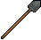 | shovel [シャベル] |
NPCから購入 細工スキルで作成 |
標準：50 高品質：100 |
| sturdy shovel [頑丈なシャベル] |
鍛冶バルクオーダーの報酬 | 150 or 200 | |
|
pickaxe [ツルハシ] |
NPCから購入 細工スキルで作成 |
標準：50 高品質：100 |
|
sturdy shovel [頑丈なツルハシ] |
鍛冶バルクオーダーの報酬 | 150 or 200 |
|
gargoyle pickaxe [ガーゴイルのツルハシ] |
鍛冶バルクオーダーの報酬 ガーゴイル系モンスター戦利品 |
101〜125 |
 leather blacksmith glove of mining [採掘者のレザーグローブ] ： miningスキル +1.0。鍛冶バルクオーダー報酬品 studded blacksmith glove of mining [採掘者のスタッドグローブ] ： miningスキル +3.0。鍛冶バルクオーダー報酬品
leather blacksmith glove of mining [採掘者のレザーグローブ] ： miningスキル +1.0。鍛冶バルクオーダー報酬品 studded blacksmith glove of mining [採掘者のスタッドグローブ] ： miningスキル +3.0。鍛冶バルクオーダー報酬品 ringmail blacksmith glove of mining [採掘者のリンググローブ] ： miningスキル +5.0。鍛冶バルクオーダー報酬品
ringmail blacksmith glove of mining [採掘者のリンググローブ] ： miningスキル +5.0。鍛冶バルクオーダー報酬品
 prospector's tool [試掘ツール] ： 1回採掘した場所に使うことで、採掘できる特殊鉱石の種類を1ランク上げることができる。鍛冶バルクオーダー報酬品 gargoyle pickaxe[ガーゴイルのツルハシ] ： 通常より1ランク上の特殊鉱石が採掘できる。稀に鉱石エレメンタルを出現させる。
prospector's tool [試掘ツール] ： 1回採掘した場所に使うことで、採掘できる特殊鉱石の種類を1ランク上げることができる。鍛冶バルクオーダー報酬品 gargoyle pickaxe[ガーゴイルのツルハシ] ： 通常より1ランク上の特殊鉱石が採掘できる。稀に鉱石エレメンタルを出現させる。
 Find Glass-Quality Sand ： sand[砂]を採取するために必要な書物。要採掘スキル100
Find Glass-Quality Sand ： sand[砂]を採取するために必要な書物。要採掘スキル100 Mining For Quality Stone ： high quality granite[高品質な花崗岩]を採取するために必要な書物。要採掘スキル100
Mining For Quality Stone ： high quality granite[高品質な花崗岩]を採取するために必要な書物。要採掘スキル100 Mining For Quality Gems ： 普通宝石を採取するために必要な書物。要採掘スキル100
Mining For Quality Gems ： 普通宝石を採取するために必要な書物。要採掘スキル100 smelter's ○○ talisman[精錬者のタリスマン(○○)] ： talismanと同じ色の鉱石の精製成功率が100％となる。Publish76ボイドプール報酬品
smelter's ○○ talisman[精錬者のタリスマン(○○)] ： talismanと同じ色の鉱石の精製成功率が100％となる。Publish76ボイドプール報酬品
1回あたりの採取数量
| 画像 | 重量 | 他の鉱石との比較 |
| 12 | ||
|
|
7 | |
| 2 | ||
形状の異なる鉱石は、より右側の鉱石にまとまります。 |
||
| 名称 | Iron | Dullcopper | Shadow | Copper | Bronze |
| 鉱石画像 |  |
 |
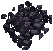 |  |
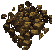 |
| 必要スキル | 0.0 | 65.0 | 70.0 | 75.0 | 80.0 |
| 名称 | Gold | Agapite | Verite | Valorite |
| 鉱石画像 |  |
 |
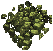 |  |
| 必要スキル | 85.0 | 90.0 | 95.0 | 99.0 |
精製の方法
 small forge ／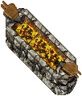large forge ／
small forge ／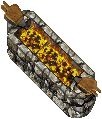large forge ／ elven forge
elven forge
| 種類 | 成功率0％ | 成功率50％ | 成功率100％ | スキル100 精製成功率 |
| iron | 〜25.0 | 50.0 | 75.0 | 100％ |
| dullcopper | --- | 65.0 | 90.0 | 100％ |
| shadow | --- | 70.0 | 95.0 | 100％ |
| copper | --- | 75.0 | 100.0 | 100％ |
| bronze | --- | 80.0 | 105.0 | 90％ |
| gold | --- | 85.0 | 110.0 | 80％ |
| agapite | --- | 90.0 | 115.0 | 70％ |
| verite | --- | 95.0 | 120.0 | 60％ |
| valorite | --- | 99.0 | 124.0 | 52％ |
1回あたりの採取数量
 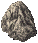
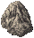
 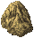
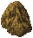
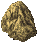
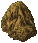

 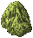
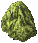


 sand [砂]
sand [砂]1回あたりの採取数量
 Blue Diamond [ブルーダイヤ]、
Blue Diamond [ブルーダイヤ]、 Dark Sapphire [ダークサファイア]
Dark Sapphire [ダークサファイア] Ecru Citrine [エクルーシトリン]、
Ecru Citrine [エクルーシトリン]、 Fire Ruby [ファイアルビー]
Fire Ruby [ファイアルビー] Perfect Emerald [完璧なエメラルド]、 Turquoise [ターコイズ]
Perfect Emerald [完璧なエメラルド]、 Turquoise [ターコイズ]1回あたりの採取数量
![amber
[琥珀]](amber.gif) amber [琥珀]、
amber [琥珀]、![amethyst
[アメジスト]](amethyst.gif) amethyst [アメジスト]、
amethyst [アメジスト]、![citrine
[シトリン]](citrine.gif) citrine [シトリン]
citrine [シトリン]![diamond
[ダイヤモンド]](diamond.gif) diamond [ダイヤモンド]、 emerald [エメラルド]、
diamond [ダイヤモンド]、 emerald [エメラルド]、![ruby
[ルビー]](ruby.gif) ruby [ルビー]
ruby [ルビー]![star sapphire
[スターサファイア]](starsapphire.gif) star sapphire [スターサファイア]、
star sapphire [スターサファイア]、![sapphire
[サファイア]](sapphire.gif) sapphire [サファイア]、
sapphire [サファイア]、![tourmaline
[トルマリン]](tourmaline.gif) tourmaline [トルマリン]
tourmaline [トルマリン]![crystalline blackrock
[ブラックロック結晶]](crystalline_blackrock.gif) crystalline blackrock [ブラックロック結晶]
crystalline blackrock [ブラックロック結晶] small piece of blackrock[ブラックロックの欠片]
small piece of blackrock[ブラックロックの欠片] saltpeter [硝石]saltpeter [硝石]
を入手することができます。
saltpeter [硝石]saltpeter [硝石]
を入手することができます。
採掘1回あたりの入手数量